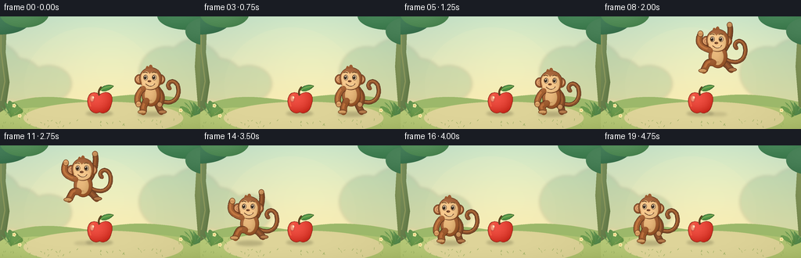
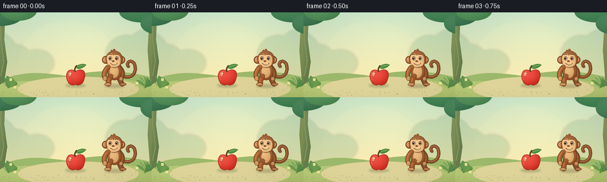

CODING AGENTS AS PIXEL WORLD MODELS
traex/GPT-6.1-Sol · dynamic_spatial_relationship_0057
点击播放 · 原生 RGB 像素
逐轮保存的候选
回放视频、检查图与代码变化。
每份候选均可单独播放。实际图片检查记录在下方工具轨迹中。
候选 01播放与检查图
点击播放 · 原生 RGB 像素


展开代码变化
--- 上一保存版本
+++ 本次保存版本
@@ -0,0 +1,232 @@
+from pathlib import Path
+import math
+import numpy as np
+from PIL import Image, ImageDraw, ImageFilter
+import artifact_io
+
+ROOT = Path(__file__).resolve().parent
+W,H,S=256,144,4
+WW,HH=W*S,H*S
+
+def pts(p): return [(int(round(x*S)),int(round(y*S))) for x,y in p]
+def bezier(p,steps=28):
+ p=np.array(p,float)
+ return [tuple((1-t)**3*p[0]+3*(1-t)**2*t*p[1]+3*(1-t)*t*t*p[2]+t**3*p[3]) for t in np.linspace(0,1,steps)]
+def path(segments):
+ out=[]
+ for s in segments: out+=bezier(s)
+ return out
+
+def ellipse(im,box,color,outline=None,width=.65):
+ d=ImageDraw.Draw(im)
+ d.ellipse(tuple(round(v*S) for v in box),fill=color,outline=outline,width=max(1,round(width*S)))
+def line(im,p,color,width):
+ ImageDraw.Draw(im).line(pts(p),fill=color,width=round(width*S),joint='curve')
+def polygon(im,p,col): ImageDraw.Draw(im).polygon(pts(p),fill=col)
+
+yy,xx=np.mgrid[0:HH,0:WW]; xx=xx/S; yy=yy/S
+
+def shaped(im,coords,base,light=18,outline=None,ellipse_shape=False):
+ mask=Image.new('L',(WW,HH));d=ImageDraw.Draw(mask)
+ if ellipse_shape:
+ box=tuple(round(v*S) for v in coords); d.ellipse(box,fill=255)
+ x0,y0,x1,y1=coords
+ else:
+ d.polygon(pts(coords),fill=255)
+ x0,y0=np.min(coords,axis=0); x1,y1=np.max(coords,axis=0)
+ cx=x0+(x1-x0)*.32;cy=y0+(y1-y0)*.24
+ dist=((xx-cx)/max((x1-x0)*.9,1))**2+((yy-cy)/max((y1-y0)*.92,1))**2
+ delta=light*(.75-1.6*np.clip(dist,0,1.4))
+ arr=np.clip(np.array(base)[None,None,:]+delta[:,:,None],0,255).astype(np.uint8)
+ im.paste(Image.fromarray(arr), (0,0), mask)
+ if outline:
+ dd=ImageDraw.Draw(im)
+ if ellipse_shape: dd.ellipse(box,outline=outline,width=round(.65*S))
+ else: dd.line(pts(coords+[coords[0]]),fill=outline,width=round(.65*S),joint='curve')
+
+def oval(im,b,c,light=16,outline=None):shaped(im,b,c,light,outline,True)
+def tube(im,p,width,col,shine=None):
+ line(im,p,(83,44,24),width+1.2)
+ line(im,p,col,width)
+ if shine:line(im,[(x-.55,y-.6) for x,y in p],shine,max(width*.38,1))
+ r=width/2
+ for x,y in (p[0],p[-1]):oval(im,(x-r,y-r,x+r,y+r),col,12)
+
+# Static sunlit clearing: atmospheric layers and a broad, calm stage.
+def background():
+ grad=np.zeros((HH,WW,3),dtype=np.float32)
+ sky=np.array([188,218,195]); bottom=np.array([243,229,173])
+ t=np.clip(yy/118,0,1)
+ grad=sky[None,None,:]*(1-t[:,:,None])+bottom[None,None,:]*t[:,:,None]
+ glow=np.exp(-(((xx-141)/102)**2+((yy-43)/84)**2))*19
+ grad+=glow[:,:,None]*np.array([1,.75,.32])
+ im=Image.fromarray(np.uint8(np.clip(grad,0,255)))
+ haze=Image.new('RGBA',(WW,HH))
+ ellipse(haze,(31,14,199,163),(255,244,193,28))
+ im=Image.alpha_composite(im.convert('RGBA'),haze).convert('RGB')
+ # Distant soft jungle silhouettes.
+ far=Image.new('RGBA',(WW,HH))
+ for x,y,rx,ry in [(-8,73,37,40),(24,81,30,27),(62,86,29,23),(213,72,35,33),(248,71,37,42)]:
+ ellipse(far,(x-rx,y-ry,x+rx,y+ry),(94,154,113,52))
+ far=far.filter(ImageFilter.GaussianBlur(2*S)); im=Image.alpha_composite(im.convert('RGBA'),far).convert('RGB')
+ p=path([[(0,115),(46,97),(73,103),(117,108)],[(117,108),(174,93),(223,102),(256,110)]])+[(256,144),(0,144)]
+ polygon(im,p,(156,184,106))
+ p=path([[(0,120),(56,113),(93,118),(134,114)],[(134,114),(183,111),(233,115),(256,123)]])+[(256,144),(0,144)]
+ shaped(im,p,(175,193,112),11)
+ # Ground, a warm sandy oval under the action.
+ oval(im,(30,109,234,151),(217,207,148),8)
+ # Framing trees kept out of the action.
+ shaped(im,[(-7,-5),(9,-5),(7,46),(12,84),(7,118),(-4,125)],(105,127,77),16)
+ line(im,[(1,3),(1,45),(6,83),(1,108)],(138,150,91),1.5)
+ shaped(im,[(253,-4),(266,-4),(265,123),(253,115),(249,64)],(115,133,75),15)
+ for x,y,rx,ry,col in [(-1,6,39,17,(59,115,79)),(31,-3,31,17,(77,135,83)),(240,-1,39,18,(61,123,78)),(266,19,29,18,(62,118,77))]:
+ oval(im,(x-rx,y-ry,x+rx,y+ry),col,15)
+ # Leaves and grass in the corners.
+ for bx,by,sign in [(14,129,1),(244,129,-1)]:
+ for j in range(5):
+ ex=bx+sign*(j*6-11); ey=by-12-8*math.sin(j*.8)
+ leaf=path([[(bx,by),(bx+sign*(j*2-10),by-15),(ex-6,ey-5),(ex,ey)],[(ex,ey),(ex+8,ey+8),(bx+5,by-4),(bx,by)]])
+ shaped(im,leaf,(77+5*j,128+4*j,68),15)
+ line(im,[(bx,by),(ex,ey)],(130,161,90),.6)
+ rng=np.random.default_rng(38)
+ for _ in range(100):
+ x=rng.uniform(2,254); y=rng.uniform(119,143)
+ if 42<x<227 and y<133:continue
+ line(im,[(x,y),(x+rng.uniform(-2,2),y-rng.uniform(1,3))],(143,166,91),.5)
+ for x,y in [(25,127),(231,120),(18,114)]:
+ line(im,[(x,y+4),(x,y-1)],(102,149,77),.6)
+ for a in np.arange(5)*2*math.pi/5:
+ ellipse(im,(x+math.cos(a)*1.5-1,y+math.sin(a)*1.5-1,x+math.cos(a)*1.5+1,y+math.sin(a)*1.5+1),(248,234,164))
+ ellipse(im,(x-.6,y-.6,x+.6,y+.6),(221,159,68))
+ return im
+
+BG=background()
+
+def shadow(im,x,y,rx,ry,alpha):
+ sh=Image.new('RGBA',(WW,HH));ellipse(sh,(x-rx,y-ry,x+rx,y+ry),(73,68,38,alpha))
+ sh=sh.filter(ImageFilter.GaussianBlur(1.6*S))
+ return Image.alpha_composite(im.convert('RGBA'),sh).convert('RGB')
+
+def apple(im):
+ # The apple remains absolutely fixed throughout the jump.
+ cx=127
+ shape=path([[(cx,100),(cx-12,91),(cx-20,106),(cx-12,119)],[(cx-12,119),(cx-6,126),(cx-1,123),(cx,122)],[(cx,122),(cx+5,126),(cx+13,122),(cx+15,113)],[(cx+15,113),(cx+20,99),(cx+10,93),(cx,100)]])
+ shaped(im,shape,(214,54,41),34,(143,45,28))
+ # Subtle rounded rim and highlight that read as glossy apple skin.
+ line(im,bezier([(116,115),(112,104),(116,99),(121,100)]),(246,101,69),1.15)
+ hil=Image.new('RGBA',(WW,HH));ellipse(hil,(115,101,120,109),(255,229,179,124));hil=hil.filter(ImageFilter.GaussianBlur(.6*S))
+ im.paste(Image.alpha_composite(im.convert('RGBA'),hil).convert('RGB'))
+ ellipse(im,(118,102,120,105),(255,227,187))
+ line(im,bezier([(127,101),(125,97),(127,92),(130,90)]),(91,65,31),2.5)
+ line(im,[(127.1,97),(129.5,91)],(156,113,55),.6)
+ leaf=path([[(128,94),(133,85),(144,88),(145,89)],[(145,89),(139,95),(133,97),(128,94)]])
+ shaped(im,leaf,(71,139,62),22,(58,104,46))
+ line(im,bezier([(129,94),(133,91),(138,90),(144,89)]),(154,186,89),.7)
+ return im
+
+
+def monkey(im,x,f,mode,amount,frame):
+ # f is the ground-contact height. The complete character translates on one jump arc.
+ air=(mode=='air'); crouch=amount if mode=='crouch' else 0
+ head_y=f-44+4*crouch; body_y=f-24+3*crouch
+ # Curling tail, unmistakably a monkey, kept behind the body.
+ tail=path([[(x+8,body_y+5),(x+29,body_y+18),(x+39,body_y+1),(x+34,body_y-12)],[(x+34,body_y-12),(x+28,body_y-23),(x+17,body_y-13),(x+24,body_y-8)]])
+ if air:tail=[(a,b-3*math.sin(amount*math.pi)) for a,b in tail]
+ tube(im,tail,4.3,(132,77,42),(173,106,57))
+ # Far-side arm and leg.
+ if air:
+ k=(x+11,f-14); foot=(x+17,f-7)
+ arm=bezier([(x+8,body_y-8),(x+16,body_y-19),(x+17,head_y-15),(x+15,head_y-20)])
+ else:
+ k=(x+10+3*crouch,f-8); foot=(x+13,f-2)
+ arm=bezier([(x+8,body_y-8),(x+17,body_y+1),(x+14,body_y+9),(x+11,body_y+13)])
+ tube(im,bezier([(x+6,body_y+8),k,k,foot]),7.6,(126,73,40),(152,88,47))
+ oval(im,(foot[0]-4,foot[1]-2.5,foot[0]+7,foot[1]+2.5),(172,114,67),13,(106,62,32))
+ tube(im,arm,6,(127,72,37),(159,94,50))
+ ax,ay=arm[-1];oval(im,(ax-3.6,ay-4,ax+3.6,ay+3.3),(191,135,82),18,(113,67,35))
+ # Round warm-brown body and cream belly.
+ oval(im,(x-12,body_y-15,x+12,body_y+15),(153,88,45),25,(104,59,31))
+ oval(im,(x-8,body_y-10,x+7,body_y+11),(218,170,110),20)
+ line(im,[(x-2,body_y+7),(x+1,body_y+7)],(167,119,72),.55)
+ # Near-side leg and broad bare foot.
+ if air:
+ knee=(x-13,f-17); foot2=(x-18,f-6)
+ else:
+ knee=(x-10-4*crouch,f-9);foot2=(x-10,f-2)
+ tube(im,bezier([(x-6,body_y+8),knee,knee,foot2]),8,(150,85,42),(185,110,59))
+ oval(im,(foot2[0]-7,foot2[1]-2.5,foot2[0]+4,foot2[1]+2.8),(203,147,88),18,(116,69,35))
+ for i in range(3):line(im,[(foot2[0]-5+i*2,foot2[1]+.5),(foot2[0]-5+i*2,foot2[1]+2)],(140,93,50),.45)
+ # Big round ears behind head.
+ for ex in [x-15,x+12]:
+ oval(im,(ex-6,head_y-6,ex+6,head_y+7),(147,84,43),23,(102,57,31))
+ oval(im,(ex-3.9,head_y-3.8,ex+3.9,head_y+4.6),(221,159,106),18)
+ line(im,bezier([(ex+1,head_y-2),(ex-3,head_y-3),(ex-3,head_y+3),(ex,head_y+3)]),(174,112,68),.8)
+ # Head and short crown tufts.
+ oval(im,(x-15,head_y-15,x+14,head_y+14),(150,86,45),25,(102,59,32))
+ tufts=path([[(x-7,head_y-13),(x-6,head_y-18),(x-4,head_y-17),(x-3,head_y-15)],[(x-3,head_y-15),(x-2,head_y-20),(x+2,head_y-19),(x+2,head_y-14)]])
+ polygon(im,tufts,(156,91,48))
+ # Joined heart-shaped tan eye mask, with muzzle slightly projecting left.
+ face=path([[(x-12,head_y+5),(x-17,head_y-9),(x-5,head_y-14),(x-2,head_y-7)],[(x-2,head_y-7),(x+4,head_y-14),(x+13,head_y-6),(x+10,head_y+6)],[(x+10,head_y+6),(x+6,head_y+15),(x-8,head_y+16),(x-12,head_y+5)]])
+ shaped(im,face,(231,185,126),22,(171,115,65))
+ oval(im,(x-12,head_y+1,x+9,head_y+13),(235,189,130),16)
+ # Lively eyes: cream whites, chocolate iris, pupil and catch lights.
+ for ex in [x-7,x+4]:
+ oval(im,(ex-2.8,head_y-5.5,ex+2.8,head_y+1.4),(253,241,211),5,(111,75,44))
+ oval(im,(ex-2.1,head_y-4.4,ex+1.3,head_y+.3),(80,48,28),13)
+ ellipse(im,(ex-1.65,head_y-3.5,ex+.45,head_y-.5),(32,28,21))
+ ellipse(im,(ex-1.35,head_y-3.7,ex-.3,head_y-2.6),(255,252,225))
+ line(im,bezier([(ex-3,head_y-8),(ex-1,head_y-9.5),(ex+1,head_y-9),(ex+2.5,head_y-7.8)]),(104,65,34),.95)
+ oval(im,(x-4.5,head_y+1.5,x+.3,head_y+4.1),(126,76,44),10)
+ ellipse(im,(x-3.6,head_y+2.5,x-2.6,head_y+3.3),(67,45,31))
+ line(im,bezier([(x-7,head_y+6),(x-3,head_y+10),(x+2,head_y+10),(x+5,head_y+5.6)]),(105,64,37),.9)
+ line(im,bezier([(x-3,head_y+8),(x,head_y+8.8),(x+2,head_y+8),(x+3,head_y+7)]),(255,225,173),.7)
+ # Front arm clear of the face, swinging upwards during flight.
+ if air:
+ end=(x-22,head_y-9)
+ p=bezier([(x-10,body_y-8),(x-23,body_y-12),(x-27,head_y+3),end])
+ else:
+ end=(x-16-2*crouch,body_y+12-crouch*3)
+ p=bezier([(x-10,body_y-8),(x-18,body_y-2),(x-19,body_y+8),end])
+ tube(im,p,6.7,(160,94,49),(194,120,65))
+ ax,ay=end;oval(im,(ax-3.8,ay-4,ax+3.4,ay+4),(216,157,96),18,(119,72,36))
+ for i in range(3):line(im,[(ax-2.2+i*1.5,ay-.8),(ax-2.2+i*1.5,ay+1.3)],(159,107,61),.4)
+ # A few fine fur accents: controlled graphic detail rather than noise.
+ for dx,dy in [(-11,-11),(9,-12),(-12,6),(11,6)]:
+ line(im,[(x+dx,head_y+dy),(x+dx+.9,head_y+dy+1.7)],(184,113,61),.5)
+ return im
+
+def render(i):
+ if i<=3:
+ x=193; f=124;mode='rest'; a=0
+ elif i<=5:
+ x=193;f=124;mode='crouch';a=(i-3)/2
+ elif i<=14:
+ a=(i-5)/9
+ x=193-130*a
+ f=124-55*4*a*(1-a)
+ mode='air'
+ elif i==15:
+ x=63;f=124;mode='crouch';a=.9
+ elif i==16:
+ x=63;f=124;mode='crouch';a=.4
+ else:
+ x=63;f=124;mode='rest';a=0
+ im=BG.copy()
+ im=shadow(im,127,124.2,17,3.1,65)
+ height=124-f
+ im=shadow(im,x,125,17-height*.11,3-height*.015,int(65-height*.55))
+ im=apple(im)
+ im=monkey(im,x,f,mode,a,i)
+ # Tiny landing dust, a restrained readable punctuation of impact.
+ if i in [15,16]:
+ dust=Image.new('RGBA',(WW,HH))
+ for dx,dy,r in [(-17,0,3.3),(20,-1,2.8),(-22,-3,2)]:
+ ellipse(dust,(x+dx-r,125+dy-r/2,x+dx+r,125+dy+r/2),(237,220,164,90 if i==15 else 42))
+ dust=dust.filter(ImageFilter.GaussianBlur(.5*S))
+ im=Image.alpha_composite(im.convert('RGBA'),dust).convert('RGB')
+ return np.asarray(im.resize((W,H),Image.Resampling.LANCZOS))
+
+if __name__=='__main__':
+ frames=np.stack([render(i) for i in range(20)]).astype(np.uint8)
+ artifact_io.save(frames,ROOT)
+ print('Saved',frames.shape,frames.dtype)
可观测工具轨迹
实际执行的命令与返回图片。
命令 1exit 0
/bin/bash -lc "ls -la && cat prompt.txt && printf '\\n---RULES---\\n' && cat GENERATION_RULES.md && printf '\\n---SPEC---\\n' && cat task_spec.json"
命令 2exit 0
/bin/bash -lc 'cat artifact_io.py'
命令 3exit 0
/bin/bash -lc "cat > generate.py <<'PY'
from pathlib import Path
import math
import numpy as np
from PIL import Image, ImageDraw, ImageFilter
import artifact_io
ROOT = Path(__file__).resolve().parent
W,H,S=256,144,4
WW,HH=W*S,H*S
def pts(p): return [(int(round(x*S)),int(round(y*S))) for x,y in p]
def bezier(p,steps=28):
p=np.array(p,float)
return [tuple((1-t)**3*p[0]+3*(1-t)**2*t*p[1]+3*(1-t)*t*t*p[2]+t**3*p[3]) for t in np.linspace(0,1,steps)]
def path(segments):
out=[]
for s in segments: out+=bezier(s)
return out
def ellipse(im,box,color,outline=None,width=.65):
d=ImageDraw.Draw(im)
d.ellipse(tuple(round(v*S) for v in box),fill=color,outline=outline,width=max(1,round(width*S)))
def line(im,p,color,width):
ImageDraw.Draw(im).line(pts(p),fill=color,width=round(width*S),joint='curve')
def polygon(im,p,col): ImageDraw.Draw(im).polygon(pts(p),fill=col)
yy,xx=np.mgrid[0:HH,0:WW]; xx=xx/S; yy=yy/S
def shaped(im,coords,base,light=18,outline=None,ellipse_shape=False):
mask=Image.new('L',(WW,HH));d=ImageDraw.Draw(mask)
if ellipse_shape:
box=tuple(round(v*S) for v in coords); d.ellipse(box,fill=255)
x0,y0,x1,y1=coords
else:
d.polygon(pts(coords),fill=255)
x0,y0=np.min(coords,axis=0); x1,y1=np.max(coords,axis=0)
cx=x0+(x1-x0)*.32;cy=y0+(y1-y0)*.24
dist=((xx-cx)/max((x1-x0)*.9,1))**2+((yy-cy)/max((y1-y0)*.92,1))**2
delta=light*(.75-1.6*np.clip(dist,0,1.4))
arr=np.clip(np.array(base)[None,None,:]+delta[:,:,None],0,255).astype(np.uint8)
im.paste(Image.fromarray(arr), (0,0), mask)
if outline:
dd=ImageDraw.Draw(im)
if ellipse_shape: dd.ellipse(box,outline=outline,width=round(.65*S))
else: dd.line(pts(coords+[coords[0]]),fill=outline,width=round(.65*S),joint='curve')
def oval(im,b,c,light=16,outline=None):shaped(im,b,c,light,outline,True)
def tube(im,p,width,col,shine=None):
line(im,p,(83,44,24),width+1.2)
line(im,p,col,width)
if shine:line(im,[(x-.55,y-.6) for x,y in p],shine,max(width*.38,1))
r=width/2
for x,y in (p[0],p[-1]):oval(im,(x-r,y-r,x+r,y+r),col,12)
# Static sunlit clearing: atmospheric layers and a broad, calm stage.
def background():
grad=np.zeros((HH,WW,3),dtype=np.float32)
sky=np.array([188,218,195]); bottom=np.array([243,229,173])
t=np.clip(yy/118,0,1)
grad=sky[None,None,:]*(1-t[:,:,None])+bottom[None,None,:]*t[:,:,None]
glow=np.exp(-(((xx-141)/102)**2+((yy-43)/84)**2))*19
grad+=glow[:,:,None]*np.array([1,.75,.32])
im=Image.fromarray(np.uint8(np.clip(grad,0,255)))
haze=Image.new('RGBA',(WW,HH))
ellipse(haze,(31,14,199,163),(255,244,193,28))
im=Image.alpha_composite(im.convert('RGBA'),haze).convert('RGB')
# Distant soft jungle silhouettes.
far=Image.new('RGBA',(WW,HH))
for x,y,rx,ry in [(-8,73,37,40),(24,81,30,27),(62,86,29,23),(213,72,35,33),(248,71,37,42)]:
ellipse(far,(x-rx,y-ry,x+rx,y+ry),(94,154,113,52))
far=far.filter(ImageFilter.GaussianBlur(2*S)); im=Image.alpha_composite(im.convert('RGBA'),far).convert('RGB')
p=path([[(0,115),(46,97),(73,103),(117,108)],[(117,108),(174,93),(223,102),(256,110)]])+[(256,144),(0,144)]
polygon(im,p,(156,184,106))
p=path([[(0,120),(56,113),(93,118),(134,114)],[(134,114),(183,111),(233,115),(256,123)]])+[(256,144),(0,144)]
shaped(im,p,(175,193,112),11)
# Ground, a warm sandy oval under the action.
oval(im,(30,109,234,151),(217,207,148),8)
# Framing trees kept out of the action.
shaped(im,[(-7,-5),(9,-5),(7,46),(12,84),(7,118),(-4,125)],(105,127,77),16)
line(im,[(1,3),(1,45),(6,83),(1,108)],(138,150,91),1.5)
shaped(im,[(253,-4),(266,-4),(265,123),(253,115),(249,64)],(115,133,75),15)
for x,y,rx,ry,col in [(-1,6,39,17,(59,115,79)),(31,-3,31,17,(77,135,83)),(240,-1,39,18,(61,123,78)),(266,19,29,18,(62,118,77))]:
oval(im,(x-rx,y-ry,x+rx,y+ry),col,15)
# Leaves and grass in the corners.
for bx,by,sign in [(14,129,1),(244,129,-1)]:
for j in range(5):
ex=bx+sign*(j*6-11); ey=by-12-8*math.sin(j*.8)
leaf=path([[(bx,by),(bx+sign*(j*2-10),by-15),(ex-6,ey-5),(ex,ey)],[(ex,ey),(ex+8,ey+8),(bx+5,by-4),(bx,by)]])
shaped(im,leaf,(77+5*j,128+4*j,68),15)
line(im,[(bx,by),(ex,ey)],(130,161,90),.6)
rng=np.random.default_rng(38)
for _ in range(100):
x=rng.uniform(2,254); y=rng.uniform(119,143)
if 42<x<227 and y<133:continue
line(im,[(x,y),(x+rng.uniform(-2,2),y-rng.uniform(1,3))],(143,166,91),.5)
for x,y in [(25,127),(231,120),(18,114)]:
line(im,[(x,y+4),(x,y-1)],(102,149,77),.6)
for a in np.arange(5)*2*math.pi/5:
ellipse(im,(x+math.cos(a)*1.5-1,y+math.sin(a)*1.5-1,x+math.cos(a)*1.5+1,y+math.sin(a)*1.5+1),(248,234,164))
ellipse(im,(x-.6,y-.6,x+.6,y+.6),(221,159,68))
return im
BG=background()
def shadow(im,x,y,rx,ry,alpha):
sh=Image.new('RGBA',(WW,HH));ellipse(sh,(x-rx,y-ry,x+rx,y+ry),(73,68,38,alpha))
sh=sh.filter(ImageFilter.GaussianBlur(1.6*S))
return Image.alpha_composite(im.convert('RGBA'),sh).convert('RGB')
def apple(im):
# The apple remains absolutely fixed throughout the jump.
cx=127
shape=path([[(cx,100),(cx-12,91),(cx-20,106),(cx-12,119)],[(cx-12,119),(cx-6,126),(cx-1,123),(cx,122)],[(cx,122),(cx+5,126),(cx+13,122),(cx+15,113)],[(cx+15,113),(cx+20,99),(cx+10,93),(cx,100)]])
shaped(im,shape,(214,54,41),34,(143,45,28))
# Subtle rounded rim and highlight that read as glossy apple skin.
line(im,bezier([(116,115),(112,104),(116,99),(121,100)]),(246,101,69),1.15)
hil=Image.new('RGBA',(WW,HH));ellipse(hil,(115,101,120,109),(255,229,179,124));hil=hil.filter(ImageFilter.GaussianBlur(.6*S))
im.paste(Image.alpha_composite(im.convert('RGBA'),hil).convert('RGB'))
ellipse(im,(118,102,120,105),(255,227,187))
line(im,bezier([(127,101),(125,97),(127,92),(130,90)]),(91,65,31),2.5)
line(im,[(127.1,97),(129.5,91)],(156,113,55),.6)
leaf=path([[(128,94),(133,85),(144,88),(145,89)],[(145,89),(139,95),(133,97),(128,94)]])
shaped(im,leaf,(71,139,62),22,(58,104,46))
line(im,bezier([(129,94),(133,91),(138,90),(144,89)]),(154,186,89),.7)
return im
def monkey(im,x,f,mode,amount,frame):
# f is the ground-contact height. The complete character translates on one jump arc.
air=(mode=='air'); crouch=amount if mode=='crouch' else 0
head_y=f-44+4*crouch; body_y=f-24+3*crouch
# Curling tail, unmistakably a monkey, kept behind the body.
tail=path([[(x+8,body_y+5),(x+29,body_y+18),(x+39,body_y+1),(x+34,body_y-12)],[(x+34,body_y-12),(x+28,body_y-23),(x+17,body_y-13),(x+24,body_y-8)]])
if air:tail=[(a,b-3*math.sin(amount*math.pi)) for a,b in tail]
tube(im,tail,4.3,(132,77,42),(173,106,57))
# Far-side arm and leg.
if air:
k=(x+11,f-14); foot=(x+17,f-7)
arm=bezier([(x+8,body_y-8),(x+16,body_y-19),(x+17,head_y-15),(x+15,head_y-20)])
else:
k=(x+10+3*crouch,f-8); foot=(x+13,f-2)
arm=bezier([(x+8,body_y-8),(x+17,body_y+1),(x+14,body_y+9),(x+11,body_y+13)])
tube(im,bezier([(x+6,body_y+8),k,k,foot]),7.6,(126,73,40),(152,88,47))
oval(im,(foot[0]-4,foot[1]-2.5,foot[0]+7,foot[1]+2.5),(172,114,67),13,(106,62,32))
tube(im,arm,6,(127,72,37),(159,94,50))
ax,ay=arm[-1];oval(im,(ax-3.6,ay-4,ax+3.6,ay+3.3),(191,135,82),18,(113,67,35))
# Round warm-brown body and cream belly.
oval(im,(x-12,body_y-15,x+12,body_y+15),(153,88,45),25,(104,59,31))
oval(im,(x-8,body_y-10,x+7,body_y+11),(218,170,110),20)
line(im,[(x-2,body_y+7),(x+1,body_y+7)],(167,119,72),.55)
# Near-side leg and broad bare foot.
if air:
knee=(x-13,f-17); foot2=(x-18,f-6)
else:
knee=(x-10-4*crouch,f-9);foot2=(x-10,f-2)
tube(im,bezier([(x-6,body_y+8),knee,knee,foot2]),8,(150,85,42),(185,110,59))
oval(im,(foot2[0]-7,foot2[1]-2.5,foot2[0]+4,foot2[1]+2.8),(203,147,88),18,(116,69,35))
for i in range(3):line(im,[(foot2[0]-5+i*2,foot2[1]+.5),(foot2[0]-5+i*2,foot2[1]+2)],(140,93,50),.45)
# Big round ears behind head.
for ex in [x-15,x+12]:
oval(im,(ex-6,head_y-6,ex+6,head_y+7),(147,84,43),23,(102,57,31))
oval(im,(ex-3.9,head_y-3.8,ex+3.9,head_y+4.6),(221,159,106),18)
line(im,bezier([(ex+1,head_y-2),(ex-3,head_y-3),(ex-3,head_y+3),(ex,head_y+3)]),(174,112,68),.8)
# Head and short crown tufts.
oval(im,(x-15,head_y-15,x+14,head_y+14),(150,86,45),25,(102,59,32))
tufts=path([[(x-7,head_y-13),(x-6,head_y-18),(x-4,head_y-17),(x-3,head_y-15)],[(x-3,head_y-15),(x-2,head_y-20),(x+2,head_y-19),(x+2,head_y-14)]])
polygon(im,tufts,(156,91,48))
# Joined heart-shaped tan eye mask, with muzzle slightly projecting left.
face=path([[(x-12,head_y+5),(x-17,head_y-9),(x-5,head_y-14),(x-2,head_y-7)],[(x-2,head_y-7),(x+4,head_y-14),(x+13,head_y-6),(x+10,head_y+6)],[(x+10,head_y+6),(x+6,head_y+15),(x-8,head_y+16),(x-12,head_y+5)]])
shaped(im,face,(231,185,126),22,(171,115,65))
oval(im,(x-12,head_y+1,x+9,head_y+13),(235,189,130),16)
# Lively eyes: cream whites, chocolate iris, pupil and catch lights.
for ex in [x-7,x+4]:
oval(im,(ex-2.8,head_y-5.5,ex+2.8,head_y+1.4),(253,241,211),5,(111,75,44))
oval(im,(ex-2.1,head_y-4.4,ex+1.3,head_y+.3),(80,48,28),13)
ellipse(im,(ex-1.65,head_y-3.5,ex+.45,head_y-.5),(32,28,21))
ellipse(im,(ex-1.35,head_y-3.7,ex-.3,head_y-2.6),(255,252,225))
line(im,bezier([(ex-3,head_y-8),(ex-1,head_y-9.5),(ex+1,head_y-9),(ex+2.5,head_y-7.8)]),(104,65,34),.95)
oval(im,(x-4.5,head_y+1.5,x+.3,head_y+4.1),(126,76,44),10)
ellipse(im,(x-3.6,head_y+2.5,x-2.6,head_y+3.3),(67,45,31))
line(im,bezier([(x-7,head_y+6),(x-3,head_y+10),(x+2,head_y+10),(x+5,head_y+5.6)]),(105,64,37),.9)
line(im,bezier([(x-3,head_y+8),(x,head_y+8.8),(x+2,head_y+8),(x+3,head_y+7)]),(255,225,173),.7)
# Front arm clear of the face, swinging upwards during flight.
if air:
end=(x-22,head_y-9)
p=bezier([(x-10,body_y-8),(x-23,body_y-12),(x-27,head_y+3),end])
else:
end=(x-16-2*crouch,body_y+12-crouch*3)
p=bezier([(x-10,body_y-8),(x-18,body_y-2),(x-19,body_y+8),end])
tube(im,p,6.7,(160,94,49),(194,120,65))
ax,ay=end;oval(im,(ax-3.8,ay-4,ax+3.4,ay+4),(216,157,96),18,(119,72,36))
for i in range(3):line(im,[(ax-2.2+i*1.5,ay-.8),(ax-2.2+i*1.5,ay+1.3)],(159,107,61),.4)
# A few fine fur accents: controlled graphic detail rather than noise.
for dx,dy in [(-11,-11),(9,-12),(-12,6),(11,6)]:
line(im,[(x+dx,head_y+dy),(x+dx+.9,head_y+dy+1.7)],(184,113,61),.5)
return im
def render(i):
if i<=3:
x=193; f=124;mode='rest'; a=0
elif i<=5:
x=193;f=124;mode='crouch';a=(i-3)/2
elif i<=14:
a=(i-5)/9
x=193-130*a
f=124-55*4*a*(1-a)
mode='air'
elif i==15:
x=63;f=124;mode='crouch';a=.9
elif i==16:
x=63;f=124;mode='crouch';a=.4
else:
x=63;f=124;mode='rest';a=0
im=BG.copy()
im=shadow(im,127,124.2,17,3.1,65)
height=124-f
im=shadow(im,x,125,17-height*.11,3-height*.015,int(65-height*.55))
im=apple(im)
im=monkey(im,x,f,mode,a,i)
# Tiny landing dust, a restrained readable punctuation of impact.
if i in [15,16]:
dust=Image.new('RGBA',(WW,HH))
for dx,dy,r in [(-17,0,3.3),(20,-1,2.8),(-22,-3,2)]:
ellipse(dust,(x+dx-r,125+dy-r/2,x+dx+r,125+dy+r/2),(237,220,164,90 if i==15 else 42))
dust=dust.filter(ImageFilter.GaussianBlur(.5*S))
im=Image.alpha_composite(im.convert('RGBA'),dust).convert('RGB')
return np.asarray(im.resize((W,H),Image.Resampling.LANCZOS))
if __name__=='__main__':
frames=np.stack([render(i) for i in range(20)]).astype(np.uint8)
artifact_io.save(frames,ROOT)
print('Saved',frames.shape,frames.dtype)
PY
python generate.py"命令 4exit 1
/bin/bash -lc "ls -lh pixels.npz index.html inspection.png && python - <<'PY'
from pathlib import Path
from PIL import Image
import numpy as np
p=Path('.')
a=np.load(p/'pixels.npz')['pixels']
assert a.shape==(144,256,20)
assert len(list((p/'frames').glob('*.png')))==20
assert all(Image.open(p/'frames'/f'{i:02d}.png').mode=='RGB' for i in range(20))
print('Verified all 20 RGB frames and required artifacts.')
PY
command -v ffmpeg"保存候选 1 份；完成命令 4 次；可验证图片返回 0 张。原始 API 响应与完整日志保留在本地。